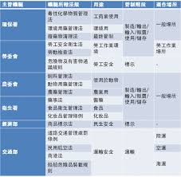

<thml>
<head>
<title>首頁</title>
</head>
<body>
台灣食品業自2013年大統長基混油事件爆發後，層出不窮的食安問題，導致民眾對政府和食品業者幾乎信任崩盤，台灣「美食王國」的招牌因而蒙塵。<br> 

<hr>     
《食力》於2018年8月22日至9月2日舉辦「食力調查局！台灣食品業信任大調查」，共回收1712份網路問卷。調查發現，這5年來，雖然政府力求落實食安政策，業者正在加強自主管理，但問到「您是否信任台灣食品業？」，仍有42.6%民眾回答「不信任」<br>

<p>
<iframe width="560" height="315" src="https://www.youtube.com/embed/Rnm8DKN1MYA" frameborder="0" allow="accelerometer; autoplay; encrypted-media; gyroscope; picture-in-picture" allowfullscreen></iframe>
<p>

<a href="2hd.html">連到第二頁</a>
<a href="3hd.html">連到第三頁</a>
<a href="4hd.html">連到第四頁</a>
<a href="5hd.html">連到第五頁</a>

</body>
</thml>